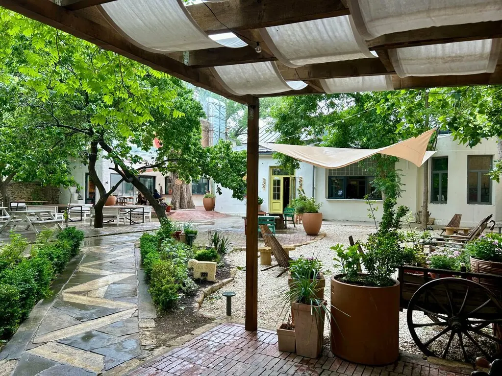
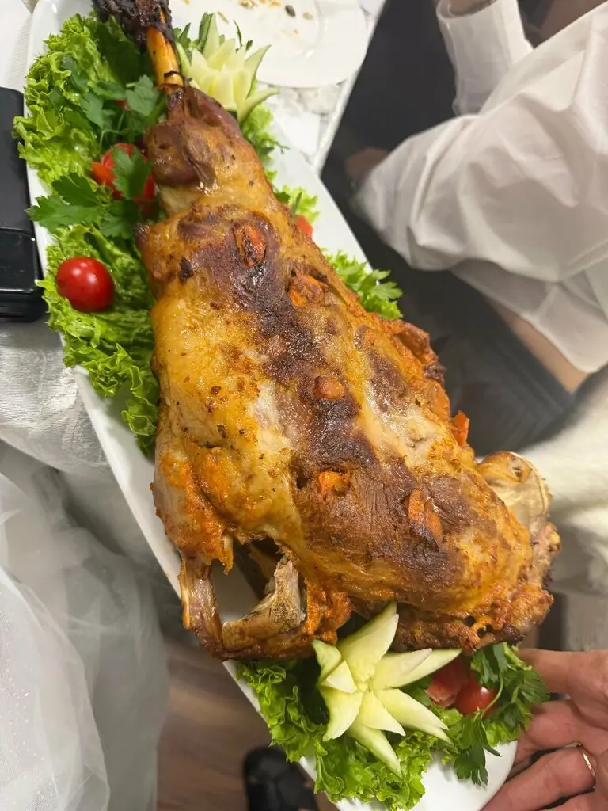
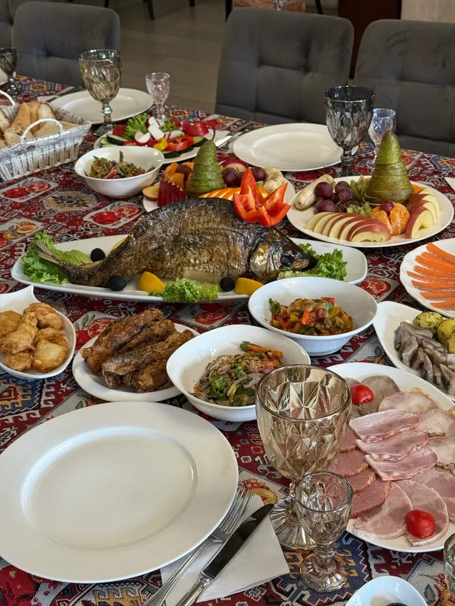
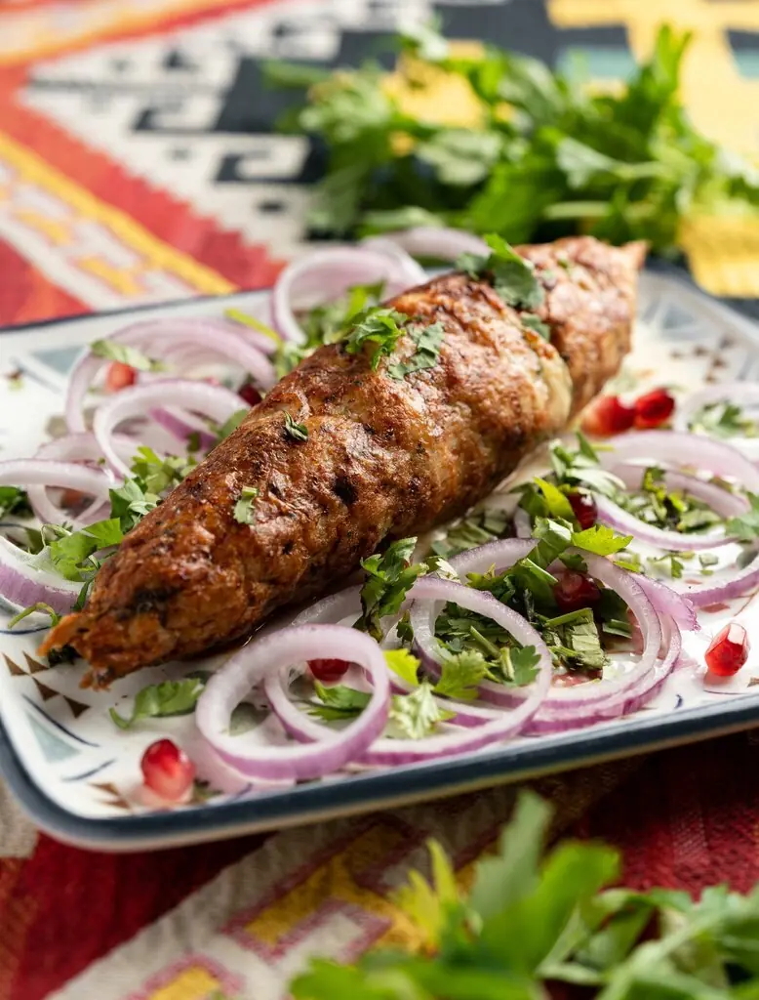
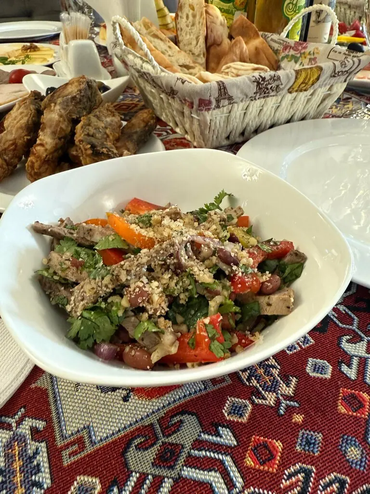
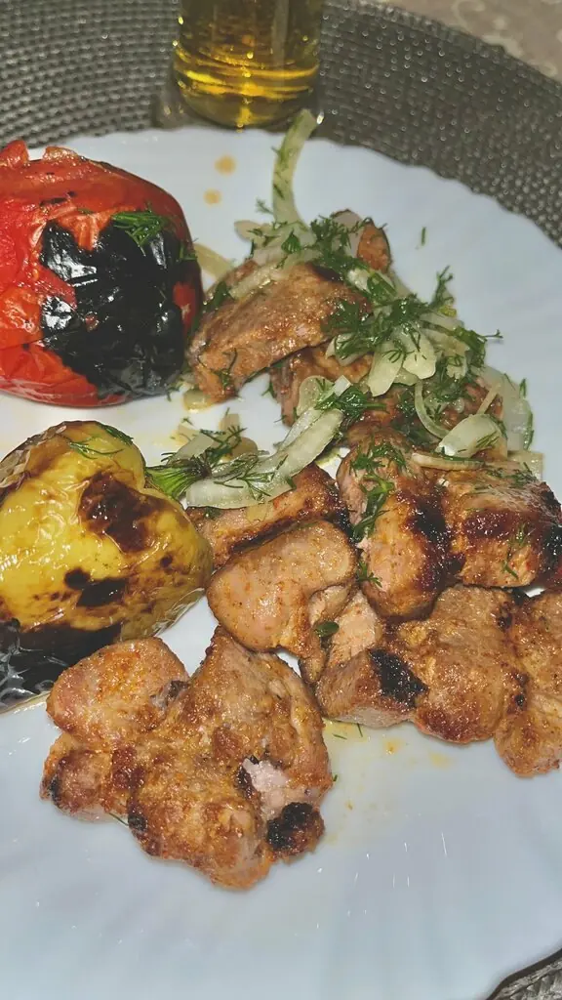
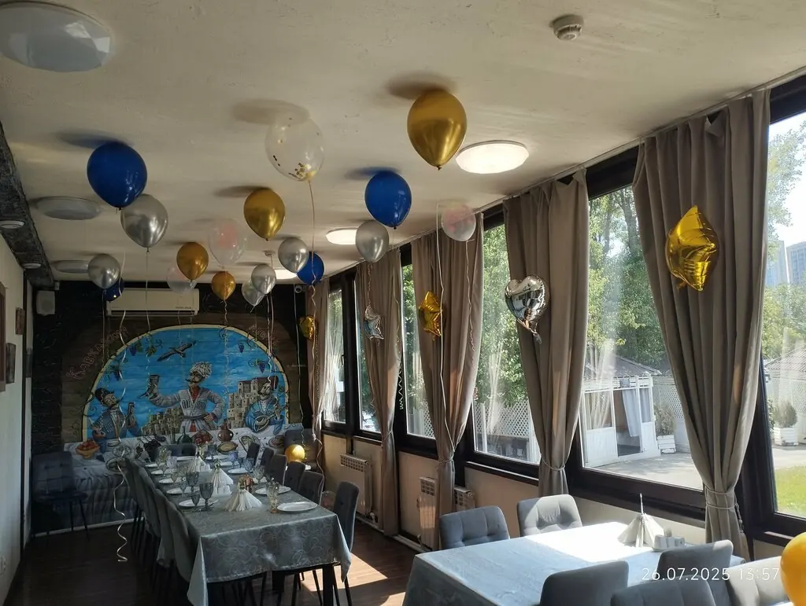

Кавказский дворик
Двор с садом и телегой, ковры на столах и азербайджанская кухня, какую подают дома гостям.
4,5 · 125 оценок
Стол на весь двор




Советуют гости
- Каре барашка
- Лодочка с чачей и айвовым напитком
- Мясо и рыба на мангале
- Большой стол на компанию
Блюда из отзывов гостей. Полное меню с ценами добавим из вашего прайса.


Праздник на 100 гостей
Дни рождения, юбилеи и просто семейные встречи. Шары и цифры, большая роспись на стене и зал у окон.
Говорят
Рекомендую карэ барашка. И лодочку возьмите. С чачей и айвовым напитком. Не пожалеете.Ник Нэйм
Шикарное заведение. Вкусная кухня. Отличный персонал.Виктория Коляда
Вкусная кухня. Хорошее обслуживание. Атмосфера. Приедем ещё!Катерина Кондакова